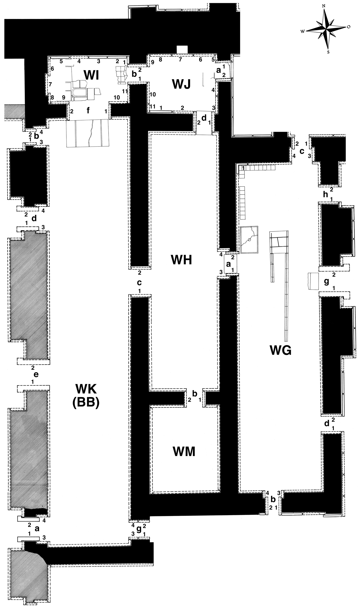

|
Relief Slabs by Collection
(duplication results from individual fragments in different places)
Amherst College, Amherst, Masssachusetts, USA
WW-33b AC S.1855.2
Arkeoloji Müzeleri, Istanbul, Turkey
WWc-1a 7037
Bowdoin College, Brunswick, Maine, USA
WW-30a Haskell Coll. 1860.1
Brooklyn Museum, Brooklyn, New York, USA
WW-4a Brooklyn 55.155
WW-5a Brooklyn 55.154
WW-14a Brooklyn 55.153
Christ Church College, Oxford, UK
WW-12a CCC —
Fitzwilliam Museum, University of Cambridge, Cambridge, UK
WW-9a WAE 45.1927
Hood Museum, Dartmouth College, Hanover, New Hampshire, USA
WW-23a HM —
WW-35a HM —
Los Angeles County Museum of Art, Los Angeles, California, USA
WW-31a M.66.4.3
WWb-01a M.66.4.5
Louvre Museum, Paris, France
WW-6a AO 19847
WWb-2a AO 19845
M. H. De Young Museum, San Francisco, California, USA
WW-25a 1995.47
Montreal Museum of Fine Arts, Montreal, Canada
WW-32b 64.E A.3
Museum and Art Gallery, Bristol, UK
WW-1a H-0796
WW-2a H-0795
Museum Calouste Gulbenkian, Lisbon, Portugal
WW-10a MCG 118
National Museum of Iraq, Baghdad, Iraq
WWc-1b IM 29059
WWc-2a IM —
Nimrud, Iraq
WW-3b fragment 6
WW-11a in situ
WW-12b in situ
WW-13a fragment 80
WW-15a fragment 2 ?
WW-15a in situ
WW-16a in situ
WW-17a in situ
WW-17Aa in situ
WW-18a in situ
WW-19a in situ
WW-20a in situ
WW-21a in situ
WW-22a in situ
WW-24a in situ
WW-28a fragment 1
WWc-1c in situ
WWc-2b in situ
WWc-3a in situ
WWc-4a in situ
WWd-1a fragment 5
WWd-1b fragment 3
WWd-1c fragment 4
WWd-1d in situ
WWd-2b in situ
Ny Carlsberg Glyptotek, Copenhagen, Denmark
WW-2a I.N. 1789
Staatliches Museum Ägyptischer Kunst, Munich, Germany
WW-3a Gl.WAF 5 + 7
State Hermitage Museum, St. Petersburg, Russian Federation
WW-34a Erm 3940
Vorderasiatisches Museum, Berlin, Germany
WW-27a VA 942
WW-29a VA 951
Wadsworth Atheneum, Hartford, Connecticut, USA
WW-32a 83.1917
missing (incl. fragments)
WW-3c
WW-7a
WW-8a
WW-12c
WW-13b
WW-24b
WW-25b
WW-26a
WW-28b
WW-32c
WWb-2c
WWd-1e
|